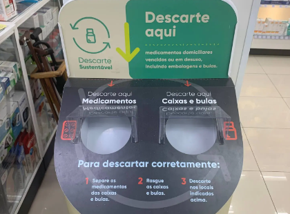

A importância do descarte adequado
O descarte correto de medicamentos e insumos hospitalares é um tema de extrema importância para a saúde pública e a preservação ambiental. Muitos medicamentos descartados inadequadamente podem contaminar o solo, a água e até o ar, resultando em graves impactos ambientais e colocando em risco a saúde da população. Dessa forma, é essencial promover a educação sobre o descarte responsável, garantindo que as pessoas saibam como eliminar esses resíduos de maneira segura.
Malefícios do descarte incorreto
O descarte incorreto de medicamentos e materiais hospitalares pode acarretar diversos problemas ambientais e de saúde. Medicamentos jogados no lixo comum ou em redes de esgoto podem levar à contaminação da água potável e do solo, afetando não apenas os ecossistemas, mas também a saúde de animais e humanos. Substâncias químicas presentes em medicamentos e insumos, como antibióticos e hormônios, podem causar desequilíbrios ecológicos e contribuir para o aumento da resistência a antibióticos, um problema crescente em todo o mundo.

O papel da tecnologia no descarte seguro
A tecnologia tem desempenhado um papel fundamental na criação de alternativas para o descarte seguro de medicamentos e insumos hospitalares. Aplicativos e sistemas de coleta seletiva específicos para resíduos farmacêuticos, por exemplo, têm sido desenvolvidos para facilitar a vida dos consumidores e profissionais de saúde. Além disso, tecnologias de rastreamento e reciclagem inteligente estão ajudando a monitorar e processar esses materiais, garantindo que sejam tratados de maneira adequada e sustentável.

Benefícios de um sistema de descarte inteligente
Um sistema de descarte inteligente pode beneficiar toda a sociedade ao reduzir os impactos negativos de resíduos mal geridos. Com a integração de tecnologias avançadas, é possível otimizar processos de coleta e garantir que medicamentos e insumos sejam descartados de forma que minimize riscos ao meio ambiente e à saúde. Sistemas automáticos de coleta e incineração segura, além de reciclagem de materiais recicláveis, são algumas das soluções que já estão transformando o setor de descarte de resíduos hospitalares.